Introduction
This documentation covers all SolidWorks 3D modeling tasks completed during the internship session. Components modeled include the Doam Upper Part, Circular Base Plate, Rod, Part A, Part B, GT2 Pulley, Pipe/Doam Part, Curved Tray Component, and Sheet Metal Tray Design. Each part was modeled, dimensioned, annotated, and prepared as a production-ready engineering drawing.
Part 1: Doam Upper Part
Cylindrical extruded component — Ø 250 mm × 1200 mm with recess cut, fillets, and chamfers | Scale 1:20
Open SolidWorks & Start New Part File
Launched SolidWorks and created a new part file to begin the Doam Upper Part modeling process.
Select Top Plane & Begin 2D Sketch
Selected the Top Plane as the reference and opened a new 2D sketch environment.
Draw Circle — Ø 250 mm
Drew a circle with a diameter of Ø 250 mm using the Circle sketch tool, centered at the origin.
Dimension the Circle
Applied a Smart Dimension of 250 mm to fully define and lock the circle's size in the sketch.
Exit Sketch & Open Extrude Boss/Base
Exited the sketch and navigated to Features → Extrude Boss/Base to start the 3D extrusion.
Extrude to Height 1200 mm
Set the extrusion depth to 1200 mm and confirmed to create the solid cylindrical body.
Apply Cut Extrude — −250 mm
Used Cut Extrude with a depth of −250 mm on the top face to create a recessed pocket in the part.
Add Fillets
Applied fillets to break all sharp edges, improving structural integrity and finish quality.
Apply Chamfers
Added chamfers where required to ensure proper assembly fit with mating components.
Insert Material Properties
Assigned material properties (steel/aluminum) via the Material Editor to reflect design specifications.
Add Surface Finish Notes
Added surface finish notations to indicate required finish quality for manufacturing.
Save Part — Revision A
Saved the part file with Revision A in the filename to begin proper version control.
Insert into Drawing Sheet (A4)
Created a new A4 drawing sheet and inserted the part model to generate standard engineering views.
Add Dimensions in Drawing View
Added all critical dimensions to the drawing views using Smart Dimension and Model Items tools.
Annotate Tolerances
Annotated linear and angular tolerances to define acceptable variation for manufactured parts.
Add Title Block — "Doam Upper Part"
Filled in the drawing title block with the part name "Doam Upper Part," designer name, and date.
Insert Weight & Scale (1:20)
Added the computed weight from SolidWorks and set the drawing scale to 1:20 in the title block.
Add Manufacturing Notes — Deburr Edges
Included general manufacturing notes such as "Deburr all edges" in the drawing notes section.
Add QA & Approval Placeholders
Added QA check and approval signature blocks in the title block area for the review workflow.
Save Drawing as PDF
Exported the completed drawing sheet to PDF format for sharing and archiving.
Review Extrusion Depth for Accuracy
Revisited the Extrude feature to confirm the 1200 mm depth matched the design specification exactly.
Check Cut Feature Alignment
Verified the cut extrude was centered and aligned correctly with the main cylinder body.
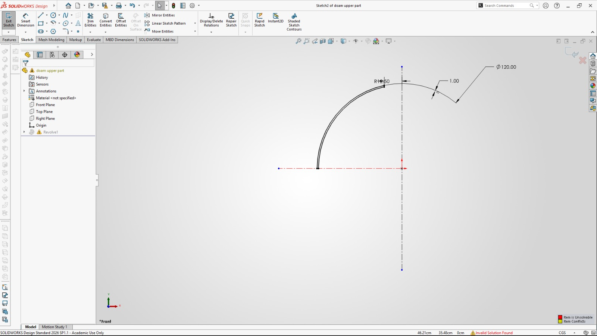
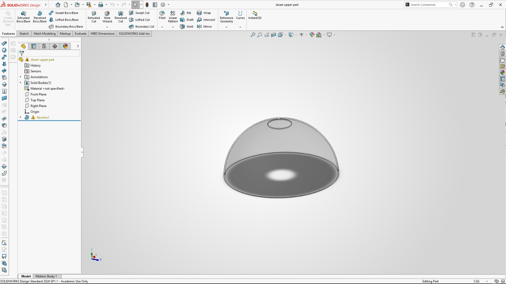
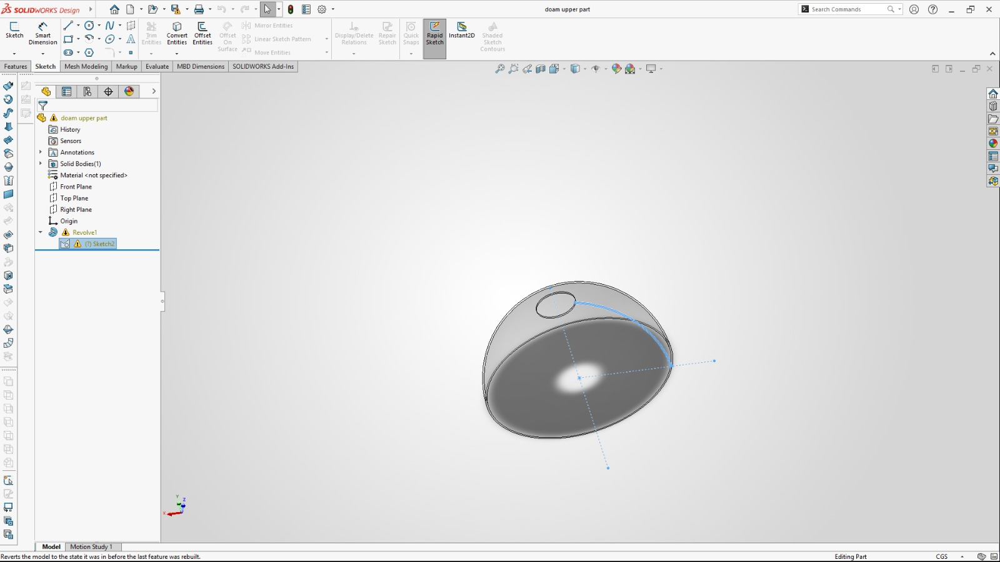
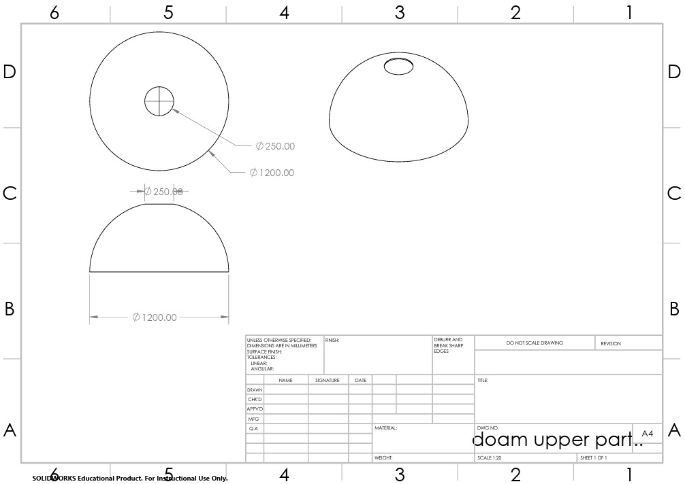
Verify Fillet Radius
Confirmed that the fillet radius values were consistent and within acceptable design limits.
Ensure Proper Scaling in Drawing
Checked that all drawing views rendered correctly at the 1:20 scale without clipping or overlap.
Add Section View
Inserted a section view to show the internal recess clearly, improving drawing readability.
Add Isometric View for Clarity
Placed an isometric 3D view on the drawing sheet for a clear visual representation of the part.
Cross-Check Dimensions with Design Intent
Compared all annotated dimensions on the drawing against the original design requirements.
Update Revision History
Logged Revision A details in the revision block, noting changes made and the date of update.
Export Final Drawing
Exported the final verified drawing as both a SolidWorks drawing file and a PDF for records.
Document Assembly Role
Noted the assembly role of this part: fits with the base plate as the upper mating component.
Part 2: Circular Base Plate
Foundation plate — Ø 1200 mm × 25 mm with central hole, fillets, and bolt-hole chamfers | Scale 1:20
Start New Part in SolidWorks
Opened SolidWorks and created a fresh part file for the Circular Base Plate design.
Select Top Plane
Selected the Top Plane as the sketching reference plane to begin the base geometry.
Sketch Circle — Ø 1200 mm
Drew a large circle with a diameter of Ø 1200 mm centered at the sketch origin.
Dimension the Circle
Applied a Smart Dimension of 1200 mm to fully define and lock the circle geometry.
Extrude Thickness — 25 mm
Extruded the circle sketch to a thickness of 25 mm to form the flat base plate body.
Apply Central Hole (if Required)
Added a central through-hole using Cut Extrude as required by the assembly design specification.
Add Fillets to Edges
Applied fillets to the top and bottom circular edges to remove sharp corners for safety and finish.
Apply Chamfers for Bolt Holes
Added chamfers to bolt hole entries to allow proper seating of bolt heads and fasteners.
Insert Material Properties
Assigned structural steel as the material to ensure accurate mass and simulation data.
Add Surface Finish
Specified the required surface finish on load-bearing and mating faces of the base plate.
Save Part
Saved the completed 3D model file with a proper name and revision identifier.
Insert into Drawing Sheet
Opened a new drawing sheet and inserted the base plate model to generate standard orthographic views.
Add Dimensions
Dimensioned the drawing views including overall diameter, thickness, hole diameter, and bolt circle PCD.
Annotate Tolerances
Added geometric and dimensional tolerances for flatness, hole positions, and surface finish requirements.
Add Title Block — "Circular Base Plate"
Completed the title block with the part name, part number, and project details.
Insert Weight & Scale (1:20)
Inserted the SolidWorks-computed mass value and confirmed the drawing scale is set to 1:20.
Add Manufacturing Notes
Added manufacturing notes including deburring requirements and surface treatment specifications.
Add QA Placeholders
Inserted QA inspection and approval signature blocks to support the review and sign-off process.
Save Drawing as PDF
Exported the complete drawing as a PDF file for distribution to the manufacturing team.
Review Extrusion Thickness
Verified that the extruded thickness of 25 mm was accurately reflected in both the model and drawing.
Check Hole Placement
Confirmed that all holes were correctly positioned relative to the plate center and bolt circle diameter.
Verify Fillet Radius
Checked all fillet radii to ensure consistency and compatibility with manufacturing capabilities.
Ensure Proper Scaling
Reviewed all drawing views to confirm correct 1:20 scaling with no distortion or misalignment.
Add Section View
Inserted a section view to clearly show the plate thickness and hole profiles in the drawing.
Add Isometric View
Added an isometric 3D view to the drawing sheet for easy visual understanding of the part geometry.
Cross-Check with Assembly
Compared base plate dimensions with the full assembly drawing to confirm proper interface fit.
Update Revision History
Updated the revision block with current revision details, author, and modification summary.
Export Final Drawing
Exported the finalized drawing in both SolidWorks format and PDF for project documentation records.
Document Role — Foundation Plate
Documented the role: serves as the foundation plate supporting all upper assembly components.
Note Load-Bearing Capacity
Recorded the calculated load-bearing capacity of the base plate based on material properties and geometry.
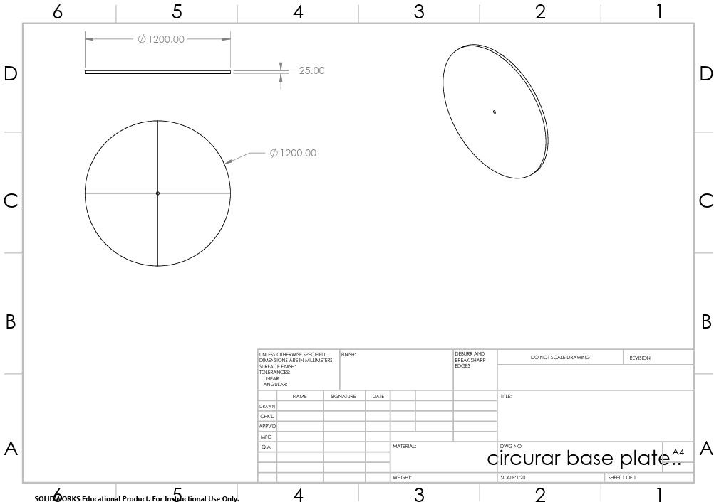
Section 1: Rod
Stepped profile structural element — Thin Extrude with mid-plane option | Depth: 2.50 cm
Open SolidWorks & Start New Part File
Launched SolidWorks and created a new part file to begin designing the Rod structural element.
Select Sketching Plane
Selected the Front Plane as the reference to draw the stepped profile of the rod.
Draw Stepped Profile Sketch
Drew the stepped horizontal profile with precise dimensions: 21.50, 28.50, 35.50, and 42.50 mm horizontally with 12.00 mm vertical height.
Apply Smart Dimensions to All Steps
Applied Smart Dimensions to each step of the profile to ensure fully defined parametric control.
Define Offsets — 2.00 mm & 2.50 mm
Set offsets of 2.00 mm and 2.50 mm to define alignment of the profile with the origin.
Exit Sketch & Open Extrude Feature
Exited the sketch and navigated to the Thin Extrude option under Extrude Boss/Base.
Apply Thin Extrude — Mid-Plane — 2.50 cm
Selected the Thin Extrude option with Mid-Plane direction and set depth to 2.50 cm, creating the rod-like stepped structure.
Verify Extrusion Symmetry
Confirmed that the mid-plane extrusion was symmetric on both sides of the sketch plane.
Review Step Dimensions
Reviewed all step heights and widths to confirm they matched the intended design values.
Document Assembly Role
Noted the assembly role of the rod: serves as the base structural element supporting the overall assembly.


Section 2: Part A
Curved connector/joint piece — R3.50 base curve, cylindrical protrusion Ø1.85, drilled hole Ø1.50 × 3.10 cm
Start New Part & Select Sketch Plane
Created a new part file and selected the appropriate plane to begin the curved base sketch for Part A.
Draw Curved Sketch — Radius R3.50, Thickness 0.29
Drew the initial curved sketch profile with radius R3.50 and a wall thickness of 0.29, defining the connector base.
Apply Boss-Extrude — Blind 2.50 cm
Applied Boss-Extrude with Blind depth of 2.50 cm to create the main 3D curved body of Part A.
Apply Secondary Extrusion — 0.10 cm
Added a secondary Boss-Extrude of 0.10 cm depth to form a small raised feature on the curved base.
Add Circular Feature — Ø1.85 at One End
Sketched and added a circular boss feature of diameter Ø1.85 mm at the end of the curved body.
Apply Boss-Extrude for Cylindrical Protrusion — Ø1.85 × 2.60 cm
Used Boss-Extrude to create a cylindrical protrusion of diameter Ø1.85 mm and depth 2.60 cm at the end.
Apply Cut-Extrude — Ø1.50 Hole × 3.10 cm
Applied Cut-Extrude with a diameter of Ø1.50 mm and depth of 3.10 cm using the "Flip side to cut" option to create the drilled hole.
Verify Final Geometry
Reviewed the final model showing the curved base with cylindrical extension and drilled through-hole.
Ensure Fully Defined Sketches
Confirmed all sketches in the design tree were fully defined to ensure stability and prevent rebuild errors.
.jpeg)
.jpeg)
.jpeg)
.jpeg)
.jpeg)
.jpeg)
Document Assembly Role
Noted the assembly role of Part A: functions as a connector or joint piece between structural members.
Section 3: Part B
Hollow cylindrical pipe/sleeve — Ø25.00 outer, offset 0.30 inner, length 40 cm with Ø2.50 through-hole
Start New Part & Select Sketch Plane
Created a new part file and selected the Top Plane to begin sketching the cylindrical pipe profile.
Draw Concentric Circles — Ø25.00 Outer, Offset 0.30 Inner
Drew two concentric circles: outer diameter Ø25.00 mm and an inner circle offset by 0.30 mm to define wall thickness.
Apply Smart Dimensions to Both Circles
Dimensioned both circles and confirmed concentricity using construction lines centered at the origin.
Apply Boss-Extrude — Blind 40.00 cm
Extruded the concentric ring profile to a Blind depth of 40.00 cm, creating the long hollow cylindrical pipe body.
Apply Boss-Extrude2 — Inner Hollow Section 1.00 cm
Added a secondary Boss-Extrude of 1.00 cm depth for the inner hollow section with merge result enabled.
Create Secondary Sketch — Ø2.50 mm
Created a new sketch on the pipe face with a Ø2.50 mm circle for the through-hole cut feature.
Apply Cut-Extrude — Through All
Applied Cut-Extrude with "Through All" direction using the Ø2.50 mm sketch to create a full penetration bore.
Add Secondary Blind Cut — Depth 3.40 cm
Applied an additional Blind cut of 3.40 cm depth and ensured concentricity of all cut features.
Verify Fully Defined Sketches
Confirmed all sketches were fully defined with no under-constrained elements to prevent rebuild errors.
.jpeg)
.jpeg)
.jpeg)
.jpeg)
.jpeg)
Document Assembly Role
Noted the assembly role of Part B: functions as a pipe or sleeve — a hollow cylindrical structural connector.
GT2 Pulley — 10 mm Diameter
Belt-driven timing pulley for 3D printers, CNC machines & robotics | Scale 1:5
What It Is & Where It Is Used
- A GT2 timing pulley used in belt-driven systems for precise rotational motion transfer via toothed belt profiles.
- 3D printers — X/Y axis movement control.
- CNC machines — precise linear motion via belt drive.
- Robotics — belt-driven joint actuation.
- Automation systems requiring accurate torque and speed transfer.
Start with 2D Sketch — Circle Ø10.00 mm
Drew a 2D circle of diameter Ø10.00 mm centered at the origin as the pulley base profile.
Define Centerlines for Symmetry
Added construction centerlines through the origin to ensure symmetric feature placement around the pulley.
Apply Smart Dimension to Lock Diameter
Applied a Smart Dimension of 10.00 mm to fully define and lock the circle diameter.
Extrude Boss/Base — 0.50 cm Thickness
Extruded the circle to a thickness of 0.50 cm to form the base disk of the pulley.
Create Secondary Sketch — Ø9.00 mm Shaft Hole
Created a secondary concentric sketch of Ø9.00 mm on the pulley face to define the shaft bore.
Extrude Blind — 1.00 cm Shaft Extension
Applied a Blind extrusion of 1.00 cm to generate the central shaft hub of the pulley.
Add Cylindrical Shaft Extension
Built the cylindrical shaft extension feature to interface with the motor or bearing in the assembly.
Sketch Teeth Pattern Around Circumference
Sketched the GT2 tooth profile along the outer circumference of the pulley for belt engagement.
Use Circular Pattern Tool for Even Spacing
Applied the Circular Pattern feature to evenly space the tooth profile around the full 360° circumference.
Apply Cut-Extrude to Form Belt Grooves
Used Cut-Extrude on the patterned tooth sketch to form the precision belt grooves in the pulley.
Set Groove Cut Depth — 7.40 cm
Set the Cut-Extrude depth to 7.40 cm to achieve the correct groove depth for GT2 belt seating.
Enable Flip Side to Cut Option
Enabled the "Flip side to cut" option to ensure material removal was directed correctly into the pulley body.
Add Fillets to Smooth Edges
Applied fillets to all sharp groove and hub edges to improve belt life and reduce stress concentrations.
Apply Chamfers for Belt Seating
Added chamfers to the belt-entry edges to guide the belt onto the pulley smoothly during assembly.
Insert Material Properties — Aluminum
Assigned aluminum as the material in the Material Editor for accurate weight and dynamic properties.
Save Part as "GT2 Pulley 10 dia"
Saved the completed part file as "GT2 pulley 10 dai" with proper naming for assembly identification.
Insert into Drawing Sheet (A4)
Created an A4 drawing sheet and inserted the GT2 pulley model to generate engineering views.
Add Front, Top & Isometric Views
Placed front, top, and isometric projected views on the drawing sheet for complete documentation.
Annotate Dimensions — Ø10, Ø9, Groove Depth
Dimensioned all key features including outer diameter Ø10 mm, shaft hole Ø9 mm, and groove depth.
Add Tolerances for Precision Fit
Applied tight dimensional tolerances to ensure accurate belt engagement and shaft fit.
Insert Title Block — "GT2 Pulley"
Filled in the title block with the part name "GT2 Pulley," designer name, and project reference.
Add Weight & Scale (1:5)
Inserted the SolidWorks-computed weight and set the drawing scale to 1:5 in the title block.
Add Manufacturing Notes — Deburr Teeth
Added manufacturing notes specifying deburring of belt groove teeth for safe belt operation.
Save Drawing as PDF
Exported the completed GT2 Pulley drawing to PDF format for team distribution and records.
Review Extrusion Depth Accuracy
Verified the extrusion depth values in the model matched the design specification exactly.
Check Groove Alignment
Confirmed all belt grooves were evenly distributed and aligned around the pulley circumference.
Verify Fillet Radius
Checked all fillet radii on groove edges to confirm consistency with the design specification.
Ensure Proper Scaling in Drawing
Reviewed all drawing views to confirm correct 1:5 scaling without distortion or overlap.
Add Section View Showing Teeth Profile
Inserted a detailed section view to clearly expose the GT2 tooth profile and groove geometry.
.jpeg)
.jpeg)
.jpeg)
.jpeg)
.jpeg)
.jpeg)
.jpeg)
.jpeg)
.jpeg)
Document Role — Precise Belt-Driven Motion
Documented the role: the pulley ensures precise, backlash-free belt-driven motion in the mechanical system.
Pipe / Doam Part
Hollow cylindrical structural sleeve — Ø25.00 outer × 40 cm length with Ø2.50 through-hole | Scale 1:20
What It Is & Where It Is Used
- A cylindrical pipe-like component with concentric circles, hollow extrusion, and through-hole cuts.
- As a support rod or structural frame member in assemblies.
- As a pipe sleeve for airflow channels in solar dryer projects.
- As a connector between structural modules in mechanical systems.
- In any assembly requiring a hollow cylindrical part with precise wall thickness.
Start New Part & Open Sketch
Created a new part file and opened a sketch on the Top Plane for the concentric circle profile.
Draw Concentric Circles — Ø25.00 Outer, Offset 0.30 Inner
Drew the outer circle Ø25.00 mm and offset inner circle by 0.30 mm to define the pipe wall thickness.
Add Construction Lines & Smart Dimensions
Added construction centerlines and applied Smart Dimensions to lock both circle diameters.
Extrude Boss/Base — Blind 40.00 cm
Extruded the concentric ring sketch to a Blind depth of 40.00 cm, creating the long hollow cylindrical body.
Apply Boss-Extrude2 — Inner Hollow Section 1.00 cm
Added a secondary Boss-Extrude of depth 1.00 cm for the inner hollow section with merge result enabled.
Create Secondary Sketch — Ø2.50 mm
Sketched a Ø2.50 mm circle on the pipe face to prepare the through-hole cut feature.
Apply Cut-Extrude — Through All
Applied Cut-Extrude with "Through All" direction using the Ø2.50 mm circle for full penetration.
Add Secondary Blind Cut — Depth 3.40 cm
Added a secondary Blind cut of 3.40 cm to complete the internal bore geometry of the pipe.
Ensure Concentricity of All Cuts
Verified concentricity of the outer cylinder, inner hollow, and all cut features using the FeatureManager.
Add Fillets to Smooth Edges
Applied fillets to all sharp pipe edges to improve the part's structural finish and assembly safety.
Apply Chamfers for Assembly Fit
Added chamfers to pipe entry edges to allow smooth insertion into mating components during assembly.
Insert Material Properties — Steel
Assigned steel as the material in the Material Editor to compute accurate mass and structural properties.
Save Part as "Pipe Doam"
Saved the completed 3D model with the name "Pipe Doam" for identification within the assembly.
Insert into Drawing Sheet (A4)
Created an A4 drawing sheet and inserted Pipe Doam to generate standard engineering views.
Add Multiple Views — Front, Top, Isometric
Placed front, top, and isometric projected views on the drawing for complete visual documentation.
Annotate Dimensions — Ø25, Ø2.50, Depth
Dimensioned all key features: outer diameter Ø25 mm, bore Ø2.50 mm, and total pipe length 40 cm.
Add Tolerances for Concentricity
Applied geometric tolerances for concentricity of inner and outer cylindrical surfaces on the drawing.
Insert Title Block — "Pipe Doam"
Completed the drawing title block with the part name "Pipe Doam," designer details, and project reference.
Add Weight & Scale (1:20)
Inserted the SolidWorks-computed weight and confirmed the drawing scale is set to 1:20.
Add Manufacturing Notes — Deburr Edges
Included manufacturing notes specifying deburring of all bore and pipe end edges.
Save Drawing as PDF
Exported the Pipe Doam drawing to PDF format for team distribution and project records.
Review Extrusion Depth Accuracy
Verified the 40.00 cm extrusion depth was correctly applied in both the model and drawing views.
Check Cut Feature Alignment
Confirmed all cut features were centered and aligned correctly with the pipe's main axis.
Verify Fillet Radius
Checked all fillet radii for consistency and compliance with the manufacturing specification.
Ensure Proper Scaling in Drawing
Reviewed drawing views to confirm correct 1:20 scale rendering without distortion or overlap.
Add Section View for Clarity
Inserted a section view to expose the hollow bore and wall thickness clearly in the drawing.
Verify Wall Thickness
Confirmed the wall thickness derived from the 0.30 mm offset was consistent around the full circumference.
Cross-Check with Assembly Drawing
Compared pipe dimensions with the assembly drawing to confirm correct fit and clearance values.
Export Final Drawing
Exported the finalized Pipe Doam drawing in SolidWorks and PDF formats for complete documentation.
.jpeg)
.jpeg)
.jpeg)
.jpeg)
.jpeg)
.jpeg)
.jpeg)
.jpeg)
.jpeg)
.jpeg)
Document Role — Structural Sleeve or Airflow Channel
Documented the role: acts as a structural sleeve or airflow channel in the solar dryer assembly.
Sheet Metal Tray Design — "Tray 2 60"
Base-Flange + Edge-Flange workflow | Thickness 0.26 cm | Wall height 4 cm | 90° bend angle
Uses of This Sheet-Metal Tray
- Solar Dryer Trays for Fruits and Vegetables — the primary application in this project.
- Agricultural Produce, Grain, and Food Processing Drying Systems.
- Pharmaceutical Drying Trays and Industrial Storage Trays.
- Electronics Enclosures and Machine Component Collection Trays.
- Custom Fabricated Equipment and Material Handling Systems.
Four Images Show End-to-End Sheet Metal Workflow
The complete design set for "Tray 2 60" demonstrates the full sheet metal part design workflow from sketch to final 3D tray.
Image 1 — Base-Flange1 Feature
The first image shows the Base-Flange1 feature — the foundational first step of any SolidWorks sheet metal part.
Base Flange Takes 2D Sketch & Adds Uniform Thickness 0.26 cm
Base-Flange converts the 2D sketch profile into a flat metal plate with a uniform material thickness of 0.26 cm.
Sheet Metal Parameters — Gauge, Bend Radius, Direction
The Sheet Metal Parameters panel defines the gauge, bend radius, and direction (reverse/symmetric) for all features.
Tan/Yellow Preview Shows Flat Sheet Body Being Created
The tan/yellow shaded region in the viewport previews the flat sheet body being built from the sketch contour.
Base Flange Sets Global Thickness Inherited by All Features
The thickness defined in the Base Flange is automatically inherited by all subsequent sheet metal features in the part.
Image 2 — FeatureManager Design Tree
The second image displays the completed FeatureManager Design Tree showing all features in sequential order.
Tree Shows Sheet-Metal, Base-Flange1, Edge-Flange1 & Flat-Pattern
The design tree lists key items: Sheet-Metal master feature, Base-Flange1, Edge-Flange1, and a suppressed Flat-Pattern for fabrication.
Cut List & Flat-Pattern Features for Fabrication
The Cut List and Flat-Pattern features are unique to sheet metal parts and provide the cutting layout for laser/CNC machines.
Gray Body Confirms Base Flange Built Successfully
The gray shaded body in the viewport confirms the base flange (tray's bottom floor) was built successfully.
Material "Not Specified" — Part Needs Further Constraints
At this stage, material is "not specified" and the part is marked "Under Defined," requiring further dimensioning.
Image 3 — Edge-Flange1 Feature
The third image shows the Edge-Flange1 feature, which folds the flat plate edges upward to create the tray's side walls.
Multiple Edges Selected Simultaneously
Multiple edges of the base flange are selected at once to create all four tray sidewalls in a single operation.
Flange Length Set to Blind — 4.00 cm Wall Height
The flange length is set to "Blind" mode with a value of 4.00 cm, giving each wall the required height.
Bend Angle — 90° for Perpendicular Walls
The bend angle is set to 90 degrees, producing perpendicular box-like walls on all sides of the tray.
Pink Arrows Show Fold-Up Direction
The pink/magenta arrows in the viewport indicate the fold-up direction, and yellow outlines preview the wall geometry.
Bend Radius 0.07366 cm — Prevents Material Cracking
The bend radius of 0.07366 cm and relief settings ensure the metal bends without cracking during real-world fabrication.
Edge Flange Transforms Flat Panel into 3D Container
This step transforms the flat base panel into a fully enclosed 3D tray with usable depth and volume.
Image 4 — Smart Dimension Applied to Base Sketch
The fourth image shows the Smart Dimension tool applied to the original base sketch in the Top view.
Dimensions — 28.01, 14.07, 13.62, 12.71 cm Define Tray Footprint
Key dimensions of 28.01 cm, 14.07 cm, 13.62 cm, and 12.71 cm define the exact tray footprint shape.
PropertyManager Controls Tolerance, Precision & GD&T
The PropertyManager panel controls tolerance settings, precision (.12), dimension text formatting, and GD&T symbols.
Full Dimensioning Removes "Under Defined" Status
Fully dimensioning the sketch removes the "Under Defined" warning and locks the geometry for rebuild stability.
Parametric Dimensions Update Entire 3D Model Instantly
All dimensions are parametric — changing any value automatically updates the entire 3D model and all associated views.
Logical Workflow: Sketch → Base Flange → Walls → Review
The correct design flow is: dimension sketch (Img 4) → base flange (Img 1) → fold walls (Img 3) → review tree (Img 2).
Sketch Tab & CommandManager Provide All Tools
The Sketch tab and CommandManager ribbon at the top provide all drawing, sheet metal, and dimensioning tools.
Triad Confirms 3D Orientation in Modeling Space
The reference triad in the bottom-left corner of the viewport confirms the correct part orientation in 3D modeling space.
Status Bar Shows License, Units (CGS) & Edit State
The status bar displays useful session information: license type, units set to CGS, and the current editing state.
Features Create Manufacturable Tray with Flat Pattern
Together, all features create a fully manufacturable tray that can be unfolded into a flat pattern for fabrication.
Flat Pattern Provides Cutting Layout for Laser/CNC
The flat pattern feature is critical as it provides the exact cutting and bend layout for laser cutting or CNC bending machines.
Core Sheet Metal Principles — Thickness, Bends, Flanges, Parametric Design
This set illustrates core sheet metal design principles — uniform thickness, bend reliefs, edge flanges, and parametric dimensioning — used in real-world product fabrication.
Tray 2 — Step-by-Step SolidWorks Modeling
SolidWorks part and drawing workflow for Tray 2, a drying layer in the solar dryer assembly.
Open SolidWorks and start a new part file
Opened SolidWorks and started a new part file for Tray 2.
Select the Top Plane to begin sketching
Selected the Top Plane as the sketch plane for Tray 2.
Draw a rectangle 352.68 mm × 347.15 mm
Sketch a rectangle with the specified tray footprint dimensions.
Add proper constraints to lock the sketch
Applied constraints to fully control the sketch geometry.
Dimension all sides to avoid under-defined geometry
Added dimensions to all sides to fully define the rectangular profile.
Exit sketch and use Extrude Boss/Base
Exited the sketch and created a solid feature using Extrude Boss/Base.
Extrude to a thickness of 43 mm
Set the extrusion depth to 43 mm to form the tray base.
Create a new sketch on the top face
Selected the top face of the solid and opened a new sketch.
Draw arcs with radius R125 mm and R472 mm
Drew the required arc geometry on the top face using the specified radii.
Position arcs symmetrically along the edges
Aligned the arcs symmetrically to the rectangle edges.
Use Trim Entities to remove excess lines
Trimmed unnecessary sketch segments to clean up the profile.
Apply Cut Extrude to remove material along arcs
Removed material using Cut Extrude along the drawn arcs.
Add fillets to smooth sharp corners
Applied fillets to the cut edges to improve finish quality.
Apply chamfers to edges for assembly fit
Added chamfers to selected edges to help assembly fit and handling.
Insert material properties (e.g., mild steel)
Assigned mild steel material properties to the Tray 2 model.
Add surface finish notes (deburr edges)
Included notes to deburr edges and improve manufacturability.
Save part as “Tray 2”
Saved the completed part model with the name Tray 2.
Insert into drawing sheet (A4)
Created an A4 drawing sheet and placed the Tray 2 model views.
Add front, top, and isometric views
Added multiple views to fully document the tray geometry.
Annotate all dimensions (length, width, radius)
Added dimension annotations for all critical features.
Add tolerances for linear and angular features
Specified tolerances for the critical dimensions and arcs.
Insert title block: “Tray 2”
Completed the title block with Tray 2 name and project data.
Add weight and scale (1:5)
Included the part weight and set the drawing scale to 1:5.
Add manufacturing notes
Added manufacturing and finishing notes for production readiness.
Save drawing as PDF
Exported the Tray 2 drawing to PDF format.
Review extrusion depth accuracy
Checked the extrusion depth to confirm it matched 43 mm.
Check cut feature alignment
Verified the cut extrude was properly aligned with the tray geometry.
Verify fillet radius
Confirmed that fillet radius values were consistent and correct.
Ensure proper scaling in drawing
Verified the drawing views were correctly scaled at 1:5.
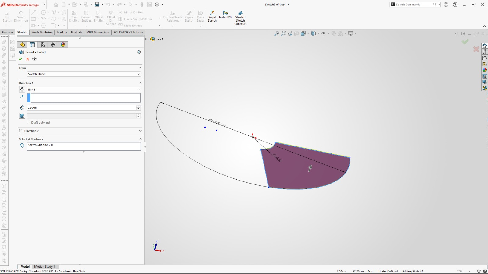
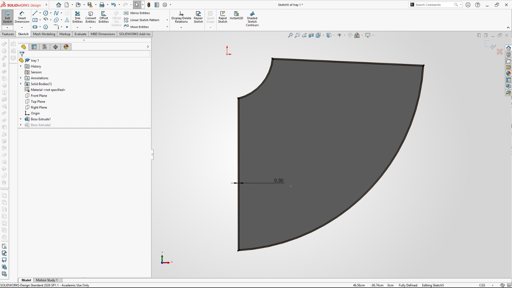
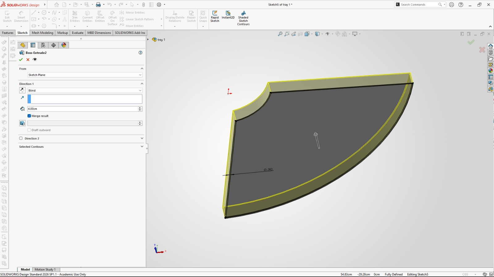
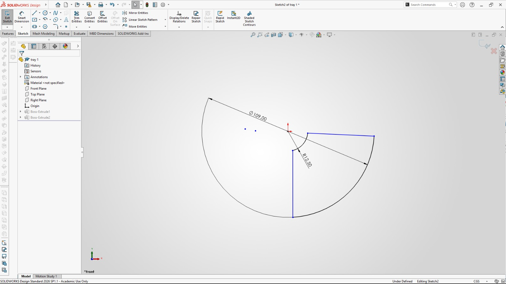
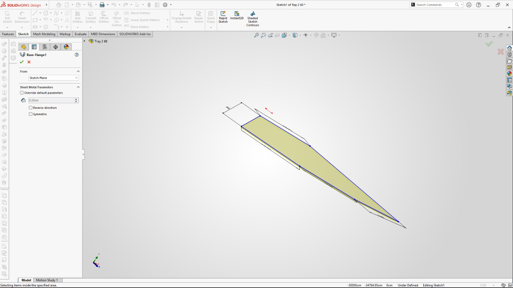
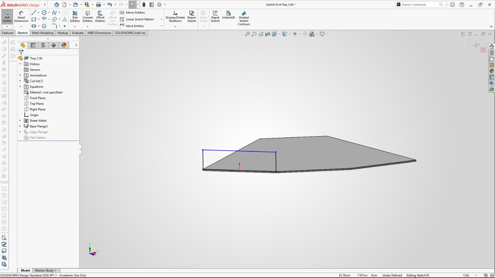
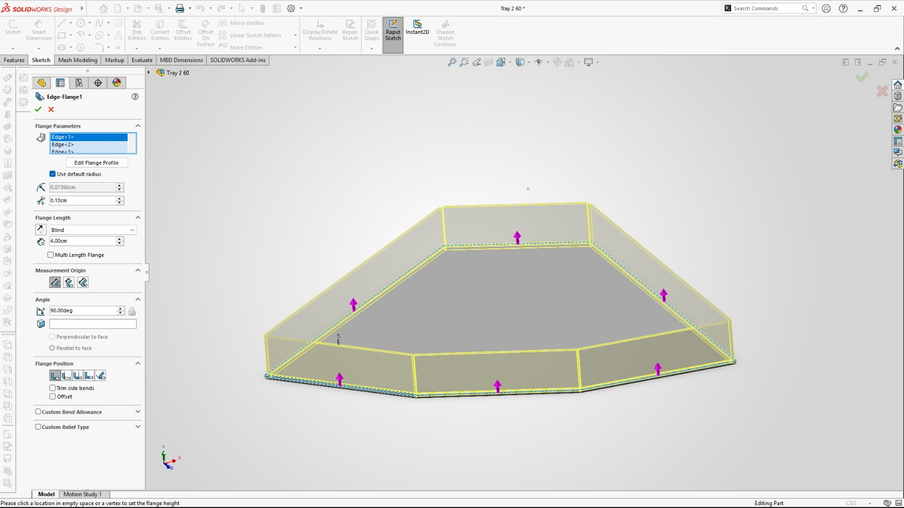
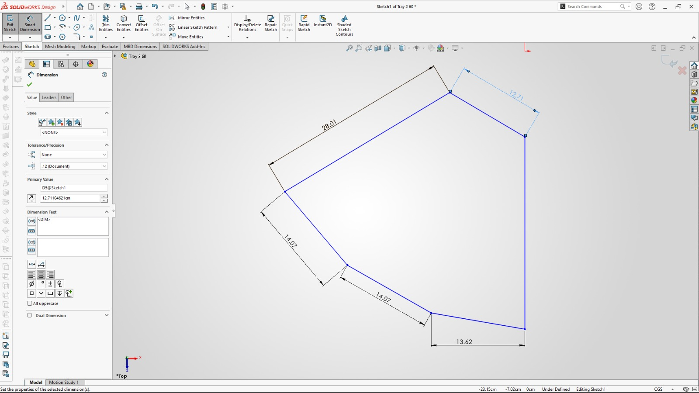
Document role: Tray 2 forms one drying layer in solar dryer assembly
Documented Tray 2's role as a drying layer within the solar dryer assembly.
Tray 3 — Step-by-Step SolidWorks Modeling
SolidWorks part and drawing workflow for Tray 3, a second drying layer in the solar dryer assembly.
Start a new part in SolidWorks
Opened SolidWorks and started a new part file for Tray 3.
Select Top Plane for sketching
Selected the Top Plane as the sketch plane for Tray 3.
Draw rectangle 282.51 mm × 276.94 mm
Sketched the Tray 3 base rectangle using the specified dimensions.
Fully define sketch with dimensions
Added dimensions to lock the sketch geometry completely.
Exit sketch and extrude thickness 43 mm
Extruded the rectangle to a thickness of 43 mm.
Create new sketch on top face
Started a new sketch on Tray 3's top face.
Draw arcs with radius R128 mm and R402 mm
Added the arc geometry using the specified radii.
Position arcs symmetrically
Aligned the arcs symmetrically on the sketch.
Trim excess lines
Removed redundant sketch segments with Trim Entities.
Apply Cut Extrude to remove material
Used Cut Extrude to remove material defined by the arcs.
Add fillets to smooth edges
Added fillets to the cut edges for a smoother finish.
Apply chamfers for assembly fit
Added chamfers to help with assembly and handling.
Insert material properties
Assigned material properties to the Tray 3 model.
Add surface finish notes
Added notes such as deburring and surface finish requirements.
Save part as “Tray 3”
Saved the Tray 3 part model with the proper filename.
Insert into drawing sheet (A4)
Placed Tray 3 into an A4 drawing sheet.
Add multiple views (front, top, isometric)
Added the required drawing views for Tray 3.
Annotate dimensions (length, width, radius)
Dimensioned all critical geometric features on the drawing.
Add tolerances
Applied manufacturing tolerances to Tray 3 dimensions.
Insert title block: “Tray 3”
Completed the drawing title block with Tray 3 information.
Add weight (373.48 units) and scale (1:5)
Included the specified weight and set the drawing scale to 1:5.
Add manufacturing notes
Added manufacturing notes for the Tray 3 drawing.
Save drawing as PDF
Exported the Tray 3 drawing to PDF format.
Review extrusion depth
Verified the extrusion depth on the Tray 3 model.
Check cut feature alignment
Ensured the cut extrude was aligned correctly with the model geometry.
Verify fillet radius
Confirmed the radius values used for fillets were correct.
Ensure proper scaling
Verified the drawing scale and view placement for Tray 3.
Add section view for clarity
Inserted a section view to clarify internal geometry and feature placement.
Export final drawing
Exported the final Tray 3 drawing for documentation.
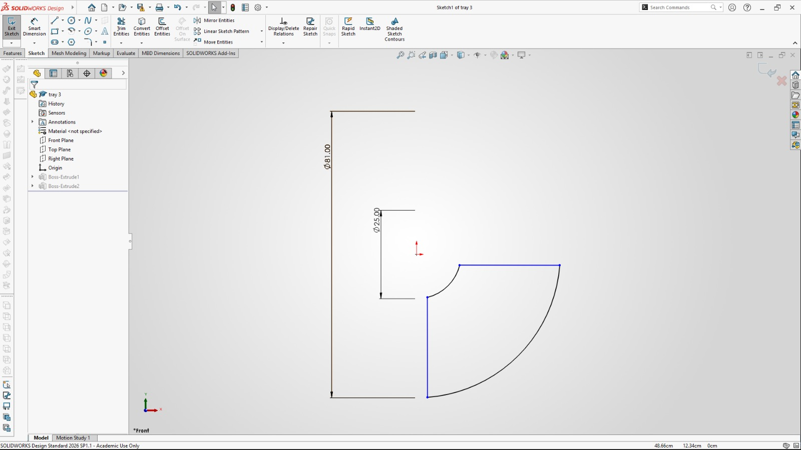
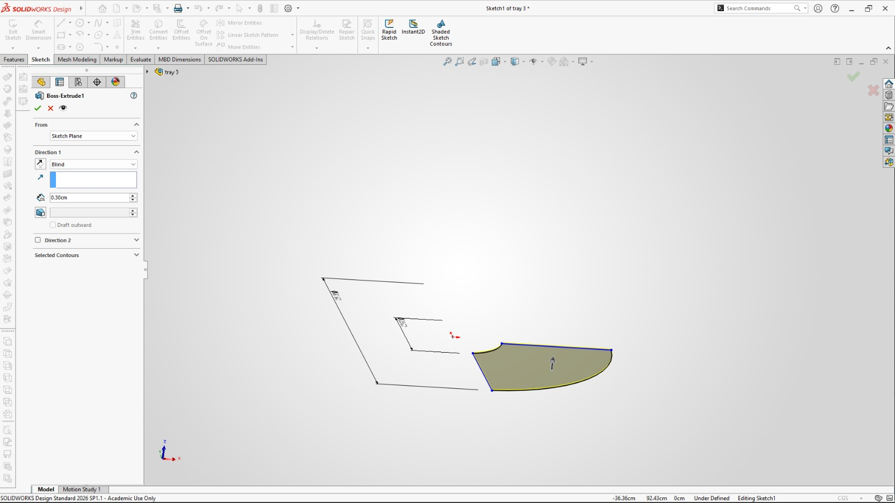
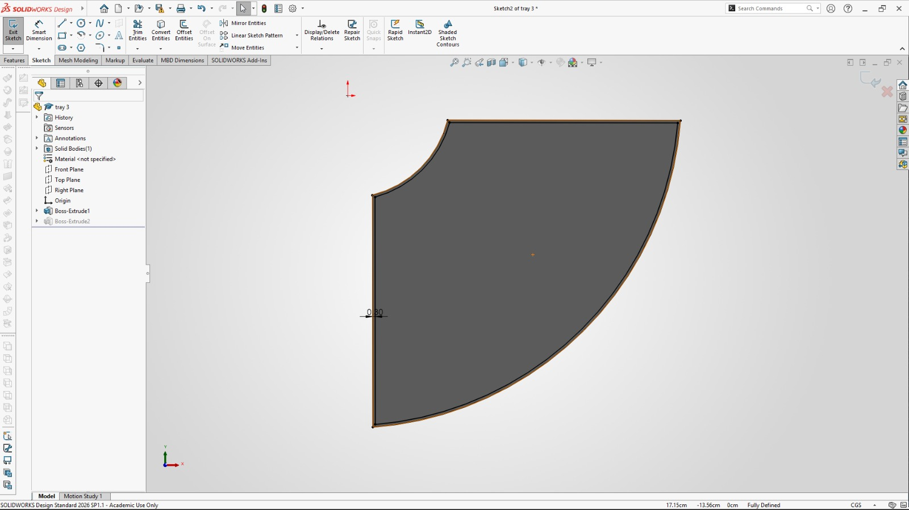
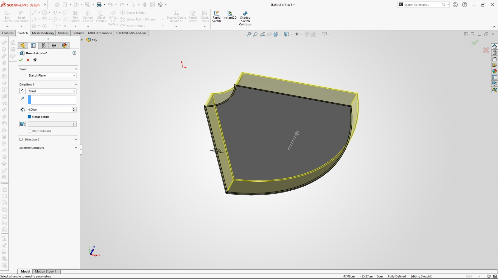
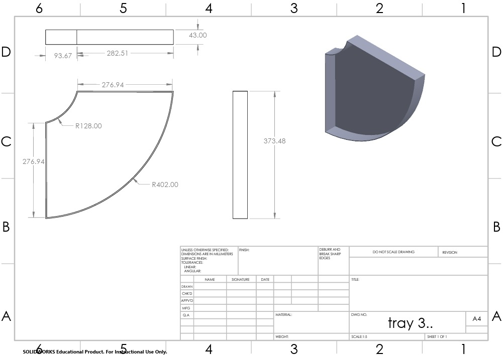
Document role: Tray 3 provides another drying layer, stacked above Tray 2
Documented that Tray 3 functions as an additional drying layer above Tray 2.
Tray 4 — Step-by-Step SolidWorks Modeling
SolidWorks part and drawing workflow for Tray 4, the topmost drying tray in the solar dryer assembly.
Open SolidWorks and start new part
Started a new SolidWorks part file for Tray 4.
Select Top Plane for sketch
Selected the Top Plane as the sketch plane.
Draw rectangle 210.57 mm × 210.57 mm
Created the square tray footprint using the specified dimensions.
Fully define sketch with dimensions
Added dimensions to fully constrain the tray sketch.
Exit sketch and extrude thickness 43 mm
Extruded the sketch to a 43 mm thick solid tray base.
Create new sketch on top face
Started a new sketch on the top face of the Tray 4 base.
Draw arcs with radius R128 mm and R335 mm
Added the arc geometry with the specified radii.
Position arcs symmetrically
Aligned the arcs symmetrically on the tray face.
Trim excess lines
Trimmed the sketch to remove unnecessary geometry.
Apply Cut Extrude to remove material
Removed material with a Cut Extrude defined by the arcs.
Add fillets to smooth edges
Added fillets to smooth the cut profile edges.
Apply chamfers for assembly fit
Added chamfers to support assembly fit and handling.
Insert material properties
Assigned material properties to Tray 4.
Add surface finish notes
Included notes describing the required surface finish.
Save part as “Tray 4”
Saved the part model using the name Tray 4.
Insert into drawing sheet (A4)
Inserted Tray 4 into a new A4 drawing sheet.
Add multiple views (front, top, isometric)
Added the standard drawing views for Tray 4.
Annotate dimensions (length, width, radius)
Dimensioned all key geometric features on the drawing.
Add tolerances
Added tolerance data for manufacturing accuracy.
Insert title block: “Tray 4”
Completed the drawing title block for Tray 4.
Add weight and scale (1:5)
Included the drawing weight and set the scale to 1:5.
Add manufacturing notes
Added manufacturing notes for the Tray 4 drawing.
Save drawing as PDF
Saved the Tray 4 drawing as PDF.
Review extrusion depth
Reviewed the extrusion depth for Tray 4 model accuracy.
Check cut feature alignment
Verified the Cut Extrude alignment on Tray 4.
Verify fillet radius
Confirmed that fillets were applied with the correct radius.
Ensure proper scaling
Checked that the drawing scaling was correct for Tray 4 views.
Add section view for clarity
Inserted a section view to clarify key Tray 4 features.
Export final drawing
Exported the final Tray 4 drawing for documentation.
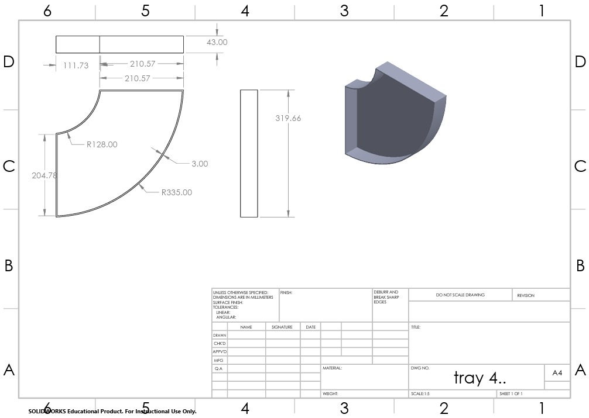
Document role: Tray 4 is the smallest drying tray, stacked at the top of the solar dryer
Documented that Tray 4 is the smallest tray and sits at the top of the drying stack.
SOLIDWORKS Sheet Metal Tray Design — Complete Workflow (All 4 Images)
What it is & where it's used: These four images together demonstrate the complete sheet metal part design workflow in SOLIDWORKS, used in manufacturing industries to create trays, enclosures, brackets, panels, and metal containers that are cut and folded from flat sheet stock.
- The four images collectively show the end-to-end process of designing a sheet metal tray named "Tray 2 60."
- Image 1 shows the Base-Flange1 feature, the foundational first step of any sheet metal part.
- The Base Flange takes a 2D sketch and gives it a uniform material thickness of 0.26 cm.
- Its Sheet Metal Parameters define gauge, bend radius, and direction (reverse/symmetric options).
- The tan/yellow shaded region previews the flat sheet body being created from the sketch.
- This step establishes the global thickness that all later features will inherit automatically.
- Image 2 displays the completed part in the FeatureManager Design Tree, listing all features in order.
- The tree shows key items: Sheet-Metal, Base-Flange1, Edge-Flange1, and a suppressed Flat-Pattern.
- The "Cut list" and "Flat-Pattern" features are unique to sheet metal parts for fabrication.
- The gray shaded body confirms the base flange (the tray's bottom floor) built successfully.
- Material is "not specified" and the part is still "Under Defined," needing more constraints.
- Image 3 shows the Edge-Flange1 feature, which folds the flat edges upward into walls.
- Multiple edges are selected at once to create all tray sidewalls simultaneously.
- The flange length is set to "Blind" at 4.00 cm, giving each wall a 4 cm height.
- The bend angle is 90 degrees, producing perpendicular, box-like walls.
- The pink/magenta arrows indicate the fold-up direction, and yellow outlines preview the geometry.
- Bend radius (0.07366 cm) and relief settings ensure the metal bends without cracking in reality.
- This step transforms the flat panel into a 3D container with depth and usable volume.
- Image 4 shows the Smart Dimension tool applied to the original base sketch in Top view.
- Dimensions like 28.01, 14.07, 13.62, and 12.71 cm define the exact tray footprint shape.
- The PropertyManager controls tolerance, precision (.12), dimension text, and GD&T symbols.
- Fully dimensioning the sketch removes the "Under Defined" status and locks the geometry.
- These dimensions are parametric, so changing them updates the entire 3D model instantly.
- Logically, the workflow flows: dimension sketch (Img 4) → base flange (Img 1) → walls (Img 3) → review (Img 2).
- The Sketch tab and CommandManager ribbon at the top provide all drawing and sheet metal tools.
- The triad in the bottom-left corner confirms part orientation in 3D modeling space.
- The status bar shows useful info: license type, units (CGS), and current editing state.
- Together these features create a manufacturable tray that can be unfolded into a flat pattern.
- The flat pattern is critical because it provides the cutting layout for laser/CNC machines.
- Overall, this set illustrates the core sheet metal principles—uniform thickness, bends, flanges, and parametric dimensioning—used in real-world fabrication and product design.
Conclusion
- Modeled the Doam Upper Part (Ø 250 mm × 1200 mm) and Circular Base Plate (Ø 1200 mm × 25 mm) as the primary assembly components.
- Designed the Rod using Thin Extrude with mid-plane option as a stepped structural element.
- Created Part A as a curved connector with cylindrical protrusion and drilled hole (Ø1.50 × 3.10 cm).
- Created Part B as a hollow cylindrical pipe (Ø25.00 × 40 cm) with through-hole for assembly integration.
- Designed the GT2 Pulley (Ø10 mm) with toothed belt groove profile for precision belt-driven motion.
- Modeled the Pipe/Doam Part (Ø25.00 × 40 cm) as a structural sleeve or airflow channel.
- Created the Curved Tray Component (Ø109 mm, R12.5 fillet) as a sector-shaped solar dryer tray.
- Completed the Sheet Metal Tray "Tray 2 60" using Base-Flange and Edge-Flange operations with flat pattern for CNC fabrication.
Reflection
This session significantly deepened my proficiency in SolidWorks solid and sheet metal modeling. Working across a diverse set of components — from precision pulleys to large-scale structural pipes and sheet metal trays — taught me how parametric design, proper feature sequencing, and manufacturing-aware annotation together create production-ready engineering documentation.
References
- SolidWorks Official Help Documentation
- ChatGPT & Microsoft Copilot
- Google Search
- YouTube SolidWorks Tutorials